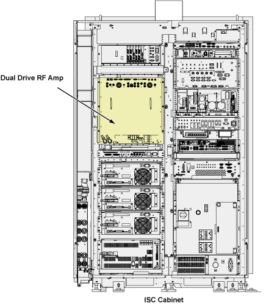
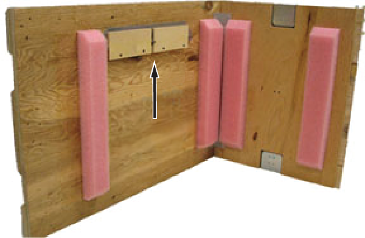
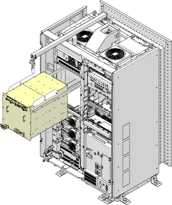
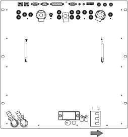
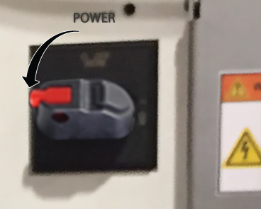
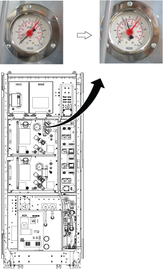
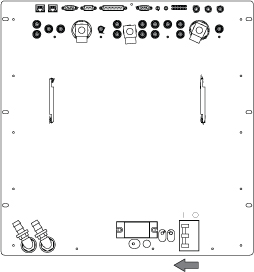
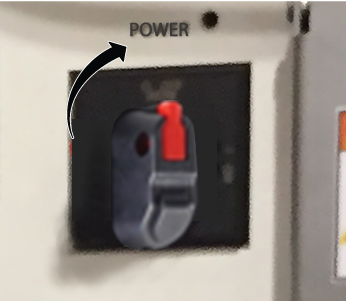

- 00000018WIA309C0E20GYZ
- id_131060514.27
- Sep 11, 2025 8:35:15 AM
Replacing the dual drive RF amplifier
This procedure describes how to replace the dual drive RF amplifier.
Prerequisites
| Personnel requirements | |||
|---|---|---|---|
| Required persons | Preliminary requirements | Procedure | Finalization |
| 1 | 5 minutes | 90 to 120 minutes | 5 minutes |
| Tools and test equipment | |||
|---|---|---|---|
| Item | Quantity | Part number | Manufacturer |
| Hoist Service Kit | 1 | 5196226 | - |
| Nonmagnetic Titanium Service Tool Kit, Small Set | 1 | 5113258 | - |
| Consumables | |||
|---|---|---|---|
| Item | Quantity | Part number | Manufacturer |
| Towels | As needed | - | - |
| Tie-wraps | 3 to 5 | - | - |
| Replacement parts | |||
|---|---|---|---|
| Item | Quantity | Part number | Manufacturer |
| Dual Drive RF Amp | 1 | Refer to FRU Manual | - |
| Prodrive NGRF3000-5 Dual Drive RF Amplifier FRU | 1 | 5886409-2 | - |
| Required conditions |
|---|
|
System power must be OFF. Apply LOTO to the ISC. See Applying LOTO - Integrated System Cabinet (ISC). |
| Safety | ||||
|---|---|---|---|---|
|
Before working in any GE HealthCare MR suite or doing any GE HealthCare service procedure, you must:
If you have any safety concerns at any time, do not begin work or immediately stop work and move to a safe location. Immediately contact your supervisor or site safety officer for instructions on how to proceed. | ||||
| ||||
| ||||
About this task
This document contains dual drive RF amplifier replacement procedure. This unit is in the Integrated System Cabinet (ISC) (shown below). The dual drive RF amplifier unit is about 152 kg (335 lb). The unit weighs enough that the use of a hoist kit is required. This document details the correct way to use a hoist kit to remove the dual drive RF amplifier unit and replace with the field replaceable unit (FRU) safely.

Procedure
- Attach the lifting brackets to both sides of the dual drive RF amplifier. The lifting brackets can be found in the dual drive RF amplifier FRU crate. The attachment screws are captive screws and remain with the lifting brackets.
Figure 11. Lifting brackets in FRU crate 
Figure 12. Attaching lifting brackets 
Warning 
Finalization
- Set the RF amplifier breaker to the OFF position.
Notice 
Figure 19. Analogic RF amplifier breaker OFF 
Figure 20. Prodrive RF amplifier breaker OFF 
- Restore the power. Remove ISC LOTO. See Removing LOTO - Integrated System Cabinet (ISC).
- Wait until the CCU pressure meter (black meter) moves for about 40 seconds.
Figure 21. Pressure meter 
- Turn the RF amplifier breaker to the ON position.
Figure 22. Analogic RF amplifier breaker ON 
Figure 23. Prodrive RF amplifier breaker ON 
- Do RF Amplifier and UPM Calibration .
- Do Dual drive quadrature tool.Note
For MR31.0 and later, Dual drive quadrature tool has been retired, please perform Calibrating for quadrature.
- Do Doing the System Performance Test (SPT).Note If all finalization tasks are not completed, a warning window will show. More information can be found in System Health Alert
- Do a check scan. See Doing a check scan.
- After attaching the center sections of the FRU package to the removed FRU unit base, attach the top of the FRU crate to prepare the FRU for return. Note Make sure the lifting brackets with the attachment screws are in the FRU crate before returning.Note The dual drive RF amplifier has two center sections.